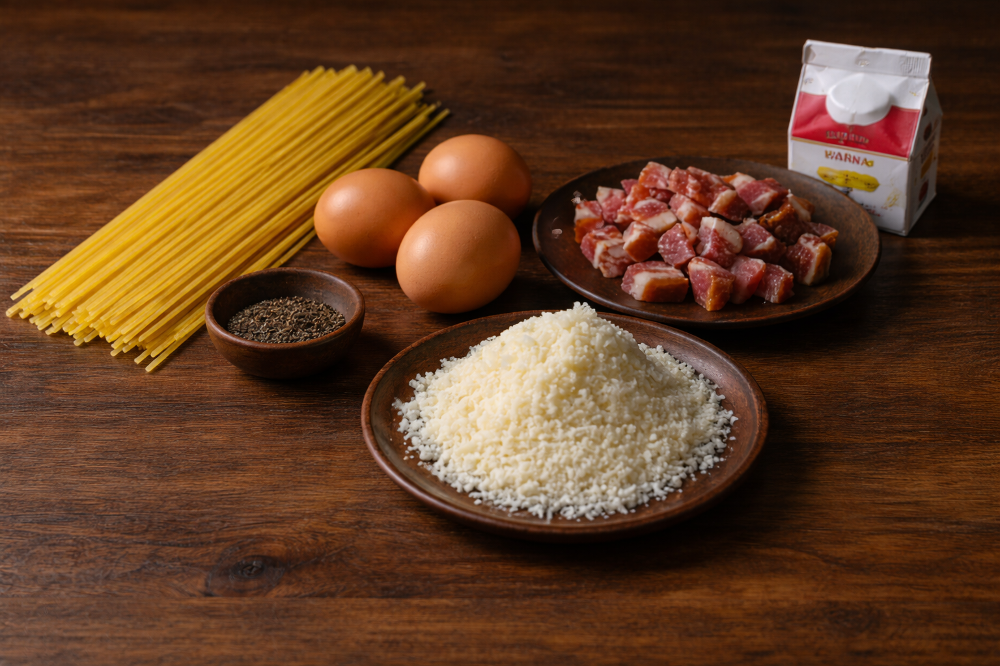

<
<!DOCTYPE html>
<html lang="it">
<head>
<meta charset="UTF-8">
<title>Stanza 1</title>

<style>
body{font-family:Arial;background:#f4f4f4;text-align:center;}
.container{width:80%;margin:auto;}
.image-wrapper{position:relative;display:inline-block;width:70%;}
.image-wrapper img{width:100%;border-radius:10px;}

.hotspot{
position:absolute;
width:28px;height:28px;
border-radius:50%;
background:#fff;
border:2px solid #ccc;
cursor:pointer;
transform:translate(-50%,-50%);
transition:.2s;
z-index:5;
}
.hotspot:hover{
transform:translate(-50%,-50%) scale(1.15);
box-shadow:0 0 8px rgba(0,0,0,.3);
}
.hotspot::after{
content:"";
position:absolute;
top:50%;left:50%;
width:10px;height:10px;
background:#555;
border-radius:50%;
transform:translate(-50%,-50%);
}

.tooltip{
position:absolute;
min-width:240px;
background:#fff;
padding:15px;
border-radius:12px;
box-shadow:0 8px 25px rgba(0,0,0,.25);
font-size:14px;
text-align:left;
opacity:0;
visibility:hidden;
transform:translate(-50%,-120%) scale(.95);
transition:.2s;
z-index:10;
}
.tooltip.active{
opacity:1;
visibility:visible;
transform:translate(-50%,-130%) scale(1);
}
.tooltip a{
display:block;
margin-top:10px;
font-weight:bold;
color:#1a73e8;
text-decoration:underline;
}
</style>
</head>

<body>

<h1>Stanza 1</h1>
<p>Individua l’elemento non coerente con la ricetta tradizionale.</p>

<div class="image-wrapper">


<!-- SPAGHETTI -->
<div class="hotspot"
style="top:38%; left:28%;"
data-testo="Spaghetti: 400 g di pasta lunga trafilata al bronzo, ideale per trattenere la crema di uova e pecorino."
data-link="errore.html"></div>

<!-- UOVA -->
<div class="hotspot"
style="top:42%; left:48%;"
data-testo="Uova: 4 tuorli freschi, fondamentali per ottenere una crema vellutata senza aggiunta di panna."
data-link="errore.html"></div>

<!-- GUANCIALE -->
<div class="hotspot"
style="top:48%; left:68%;"
data-testo="Guanciale: circa 150 g, rosolato lentamente fino a diventare croccante e rilasciare il suo grasso."
data-link="errore.html"></div>

<!-- PECORINO -->
<div class="hotspot"
style="top:78%; left:63%;"
data-testo="Pecorino Romano: 80-100 g grattugiato finemente, dona sapidità e struttura alla crema."
data-link="errore.html"></div>

<!-- PEPE -->
<div class="hotspot"
style="top:60%; left:30%;"
data-testo="Pepe nero macinato fresco: elemento essenziale per bilanciare la sapidità del pecorino."
data-link="errore.html"></div>

<!-- PANNA -->
<div class="hotspot"
style="top:28%; left:83%;"
data-testo="Panna da cucina: ingrediente spesso aggiunto nelle versioni non tradizionali."
data-link="stanza2.html"></div>

</div>

<script>
document.querySelectorAll(".hotspot").forEach(function(h){

const tooltip=document.createElement("div");
tooltip.className="tooltip";
tooltip.innerHTML=
h.dataset.testo+
'<a href="'+h.dataset.link+'">Seleziona</a>';

h.parentElement.appendChild(tooltip);

h.addEventListener("click",function(e){
e.stopPropagation();
document.querySelectorAll(".tooltip").forEach(t=>t.classList.remove("active"));
tooltip.style.top=h.style.top;
tooltip.style.left=h.style.left;
tooltip.classList.toggle("active");
});

});

document.addEventListener("click",function(){
document.querySelectorAll(".tooltip").forEach(t=>t.classList.remove("active"));
});
</script>

</body>
</html>
